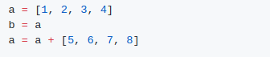
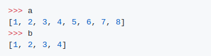
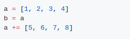
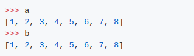

1.
output
2.
Output
a = a + b와 항상 같은 방식으로 동작하는 것은 아니다. 클래스는 op= 연산자를 다르게 구현할 수 있으며 list에서는 이를 시행한다.
a = a + [5,6,7.8]이라는 표현은 새 list을 생성하고 해당 새 list에 대한 a의 참조를 설정하며, b는 변경되지 않는다.
a+= [5,6,7,8]이라는 표현은 실제로 a와 b가 여전히 내부에서 수정된 list를 가리키도록 목록에서 작동하는 extend 함수에 매핑된다.